See it
The live picture over Wi-Fi, or full quality through an HDMI capture card. Histogram, zebras, peaking, a grid and the camera's own meter, one click each.
Live picture, focus, exposure, video, photos, slow motion and time-lapse, from across the yard or across town. One clean window on your computer, or your phone, with no cables.
Free and open source. No account, no subscription, no tracking. Tested on the A7S III.
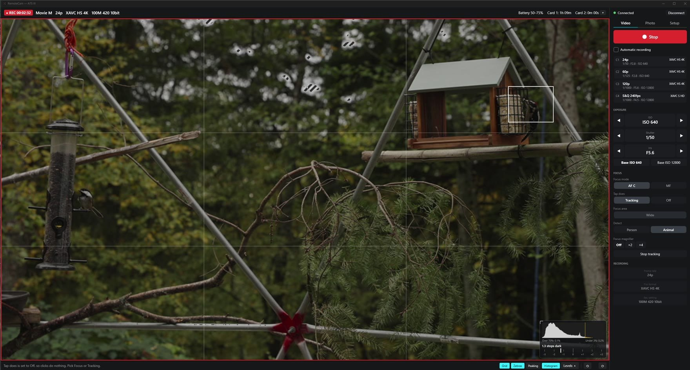
Watch
From 20 metres to across town, then not even there. One question, one camera at the feeder.
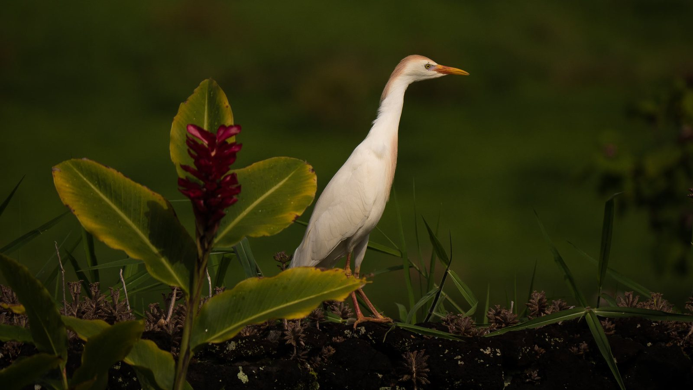
Your whole camera, in one window
And the picture stays big in the middle.
The live picture over Wi-Fi, or full quality through an HDMI capture card. Histogram, zebras, peaking, a grid and the camera's own meter, one click each.
Click the picture to focus or track. Drag the focus ring, jump along the focus bar, or magnify to check what's sharp.
Video, photos, bursts, brackets, S&Q slow motion, time-lapse and long exposures. Save to the card, your computer, or both.
Zebra level
Peaking strength
Peaking colour
A model in your browser, not a camera. In the app these come from the A7S III over Wi-Fi, about 8 pictures a second.
See what's sharp
Click the bird and the camera focuses there. Turn on Peaking and the sharp edges light up. The camera's own focus boxes show what it's locked on, and the magnifier zooms in to check.
Lock on and follow
Set Tap does to Tracking and click. The camera's tracking box stays on the bird as it hops about, and you see it move in the live picture.
Clean, and quick
Video and Photo switch the camera for you and keep what you change while shooting right in front of you. Anything you only set once lives in Setup, out of the way.
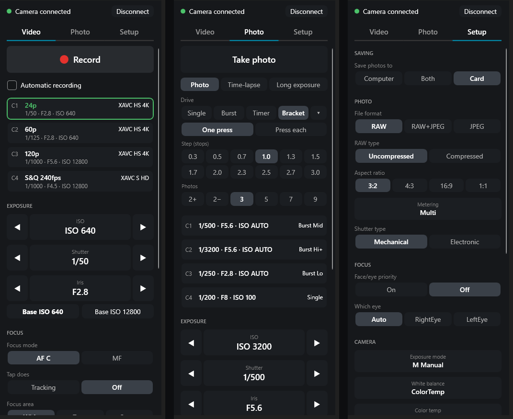
One big Record button, with a red outline around the picture while rolling. Automatic recording, your four video setups, exposure, Base ISO and focus, all on one page.
Take photo, Time-lapse or Long exposure. Pick Single, Burst, Timer or Bracket under Drive, then only the choices for that one. Four more setups, just for photos.
Where photos are saved, file format, video format and frame rate, Super 35, white balance, audio and more, without touching a camera menu. Settings your camera doesn't have are left out.
Your setups, one click away
Each saves how the camera is set right now: mode, exposure, focus, and for video the file format and frame rate. Video and Photo each have their own four.
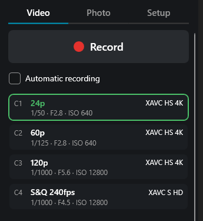
Click a setup. It turns green while the camera matches it.
S&Q slow motion
Pick how fast the camera shoots and how fast it plays back. Save it to C4 and slow motion is right there.
S&Q shoots at
S&Q plays at
Up to 240fps in HD on the A7S III. The fastest rates need an HD file format.
Base ISO
640 and 12800 in S-Log3. 12800 is the cleanest choice in low light. The buttons only appear on the A7S III; other cameras use the ISO control.
Photos, time-lapse and long exposures
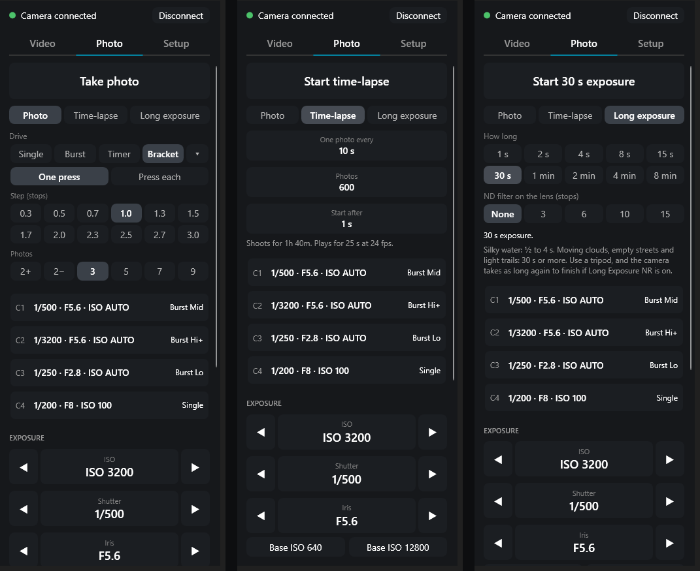
Pick a drive, then just the choices for that one.
Save to your card, your computer, or both. A full-size RAW takes 4 to 12 seconds to arrive over Wi-Fi, so for bursts use Both with Small JPEG.
Pick how often and how many. The app tells you how long it'll shoot and how long the clip will play.
One photo every 1 to 60 seconds, up to 9,999 photos, using the camera's own interval shooting.
Pick a length from 1 second to 8 minutes.
Tell it the ND filter on your lens and it suggests a length from the meter. Long exposures need the camera in M.
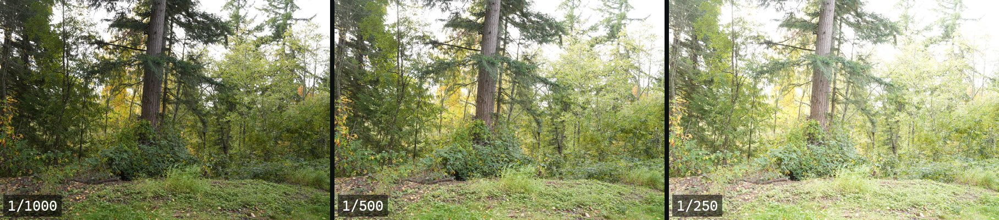
Automatic recording
Tick Automatic recording and walk away. The app watches the picture, starts recording when something shows up, focuses on it, and stops once it's been gone for a while.
Record when it sees
Stop once it's been gone for
Runs on your own computer. No pictures leave it. The iPhone app runs its own, on the phone.
Knows birds, common mammals and people. Something it doesn't know, like a squirrel, may not set it off.
Learns to ignore a spot that keeps setting it off, like splashing water, for 10 minutes.
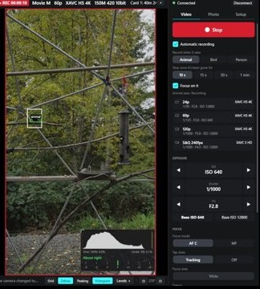
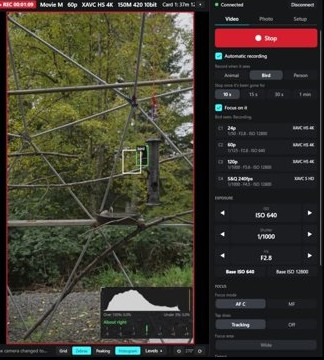
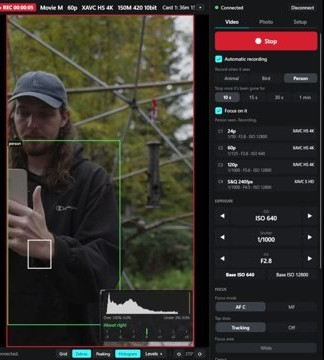
Real takes from one morning at the feeder, each started and stopped by the app. The camera is on its side here, so the picture stands upright.
Run it from anywhere
Hide the camera by a feeder, up a tree or across the yard. Then keep walking.
Put the camera on your iPhone's hotspot and run it from a computer anywhere. Download Tailscale on each device, log in with the same account, and it's automatic. Your devices find each other, with nothing to type.
Over mobile data the picture comes once a second by default, to save data: about 100 MB an hour while a computer is watching. Pick 3 or 8 a second on the phone for a smoother picture (about 280 or 750 MB an hour). The iPhone app has to stay open on screen.
When on your computer is running the camera, the iPhone and iPad find it and show the camera through it, with nothing to type. Using the computer's camera means using its automatic recording too.
Or turn it round: in the iPhone app, turn on Let my other devices join, and an iPad or a computer runs the camera through the phone.
Camera at the house on its Wi-Fi, computer 400 ft away at the end of a long Ethernet cable. The picture still arrives in about a third of a second, about 9 times a second.
Anything on the same network works: Wi-Fi, a cable, or both.
Tick Allow phone control in Setup and open the address it shows on your phone. You get the live picture, record, tap to focus, the focus ring and the camera's settings, at home or over Tailscale.
Protected by an access code. The computer stays on with the app open. On an iPhone, Share › Add to Home Screen makes it a full-screen app.
Two rules behind it all: the camera is on one network at a time, and one device runs it while the others join in.
How fast is the picture?
An iPad shows the computer's clock. The camera films it, and the computer shows both. The gap between them is how long the picture took.
Same Wi-Fi
0.20sabout 8 pictures a second
Camera and computer on the same router. Median of 24 readings.
400 ft of Ethernet
≈0.33sabout 9 pictures a second
Camera on the house Wi-Fi, computer at the end of the cable. A spot reading.
Hotspot + Tailscale
≈0.25s1 picture a second, or 3 or 8
Camera on the iPhone's hotspot in the woods, computer elsewhere. Each picture takes about 0.25 s; it comes once a second by default to save mobile data.
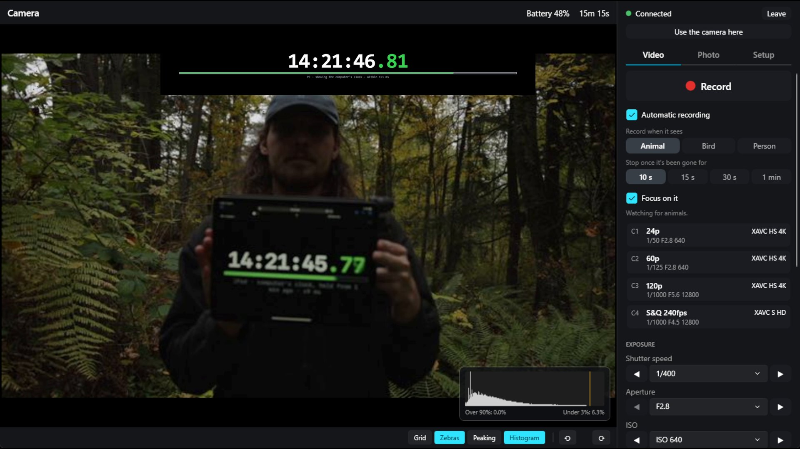
The camera's own recording is always full quality. These numbers are only for the preview you watch.
iPhone & iPad · coming to TestFlight
for iPhone and iPad runs the camera on its own, out where there's no Wi-Fi. It isn't out yet: it'll come to TestFlight, Apple's app for testing, first, and to the App Store later.
iOS and iPadOS 16 or newer. Photos and video stay on the camera's card. It only works while the app is open on screen, so keep the phone plugged in for long sessions. Close the app on your computer first: the camera takes one remote at a time.
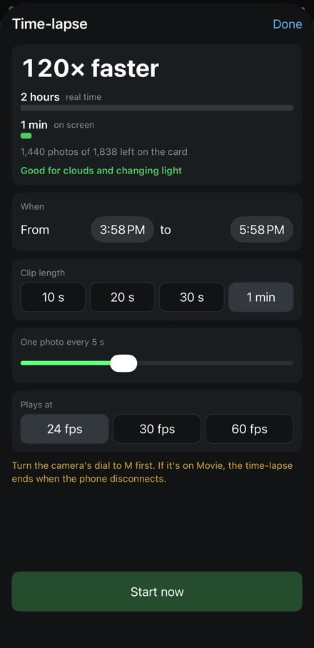
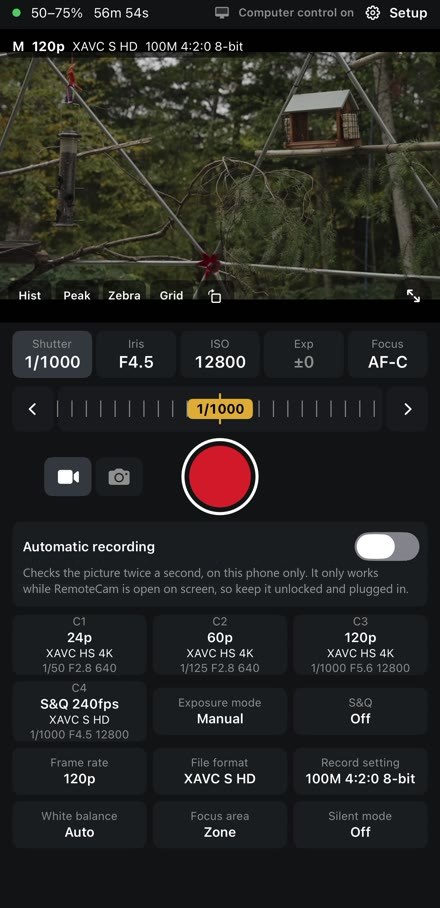
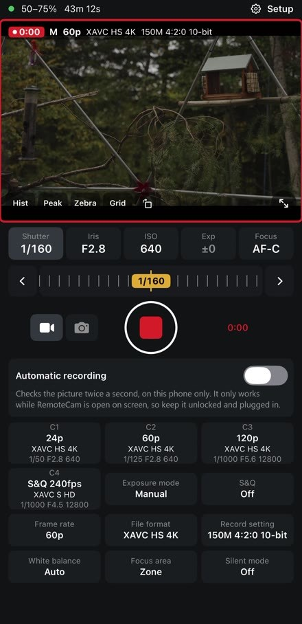
Everything it does
Live view over Wi-Fi, or full quality through an HDMI capture card. Rotate it for a camera on its side.
Click to focus or track. In MF or DMF, drag the focus ring or jump along the focus bar.
Focus magnifier and peaking.
ISO, shutter and iris, with a histogram, zebras, the camera's meter and one-click Base ISO on the A7S III.
One big button, with a red outline around the picture while rolling.
S&Q, up to 240fps in HD on the A7S III.
C1 to C4: four for video and four for photos.
Single shots, bursts, self-timer, brackets, time-lapses and long exposures, saved to your card, your computer or both.
Video format, frame rate, Super 35 crop, RAW or JPEG, white balance, audio and more, without a menu.
See what's left on each slot, and format a card from the app. It asks first.
Phone control at home or over Tailscale, a computer through the iPhone's hotspot, or 400 ft of cable. Install Tailscale, log in, and it's automatic.
Automatic recording starts and stops for animals, birds or people, and focuses on them. It runs on your computer; no pictures leave it.
Battery and card warnings before you run out.
Reconnects by itself, and the camera keeps recording if Wi-Fi drops.
Send log to the developer in Setup, one click, only when you press it.
Download · version
No account, no subscription, no tracking.
Windows 11, x64
Download for WindowsmacOS 14.1 or newer
Download for Mac Older Intel Mac? Use this one.Not sure which Mac? Apple menu › About This Mac. Chip: Apple uses the main download, Processor: Intel the Intel one.
iOS 16 or newer · not out yet
Join on TestFlightApple's free app for trying apps before they reach the App Store. The iPhone app goes there first: once it's ready, install TestFlight, open the invite link and tap Install.
Not supported, sorry.
Every version and its notes are on GitHub releases. The app looks once at launch for a newer version and shows a button; it never installs anything by itself.
Which cameras work?
It's tested on the A7S III. Sony says its remote software can control the cameras below over Wi-Fi, so they should work too, but nobody has tried most of them yet.
Update your camera to its latest firmware first. Some features, such as click to focus, may behave differently on your camera. Cameras not listed at all, such as the A7 III or a6400, aren't supported by Sony's software. Have one that works? Tell us on GitHub.
Set it up in 3 steps
You'll need a supported camera, Wi-Fi where you're shooting, and a Windows 11 PC or a Mac on macOS 14.1 or newer.
Download it above and open it. The first time, you'll see a short note about Sony's terms: click OK or I agree.
Close Sony's Monitor & Control app first. On the camera, press MENU, then tick these off. These are the A7S III's menus; most newer Sony cameras are very similar.
Menu names can differ on older firmware. Tested on the A7S III with firmware 5.01.
With your computer and camera on the same Wi-Fi, click Connect camera…, pick your camera, and type the user and password from your photo. If your computer asks about network access, say yes.
That's it. Your picture appears, and from then on it reconnects by itself whenever you open it.
Have an AI assistant?
Paste this into ChatGPT, Claude or another assistant.
Check the camera is on, on the same Wi-Fi as your computer (not a guest network), and has Remote Shooting on. Still missing? Find its address under Network › Wi-Fi › Display Wi-Fi Info. and type that IP address into the box in the app. On a Mac, check System Settings › Privacy & Security › Local Network.
Use the exact user and password from Access Authen. Info. Capitals matter, and the user often isn't admin.
Close Sony's phone app. The camera only takes one remote at a time, and that goes for the computer and the iPhone app too.
The camera's Wi-Fi signal is weak. Move your router or a mesh point closer to the camera. Recording carries on in the camera even if the link drops.
In Setup, under Something not working?, click Send log to the developer. You'll get a short reference, like K7Q2MX, to quote when you get in touch. Nothing is sent until you click, and it holds no passwords, photos or video. It's kept for 90 days.
The full guide is in the README on GitHub.
Free, private, open
No subscription, no in-app purchases. The code is MIT licensed.
Nothing to sign up for. Open it and connect.
No analytics in the app, and none on this page either: no cookies, nothing loaded from anyone else.
In Windows Credential Manager or your Mac's Keychain.
Send log in Setup sends what went wrong, only when you press it. No passwords, photos or video.
The animal detector runs on your own computer or phone.
MIT licensed. Read every line on GitHub, and build it yourself if you like.